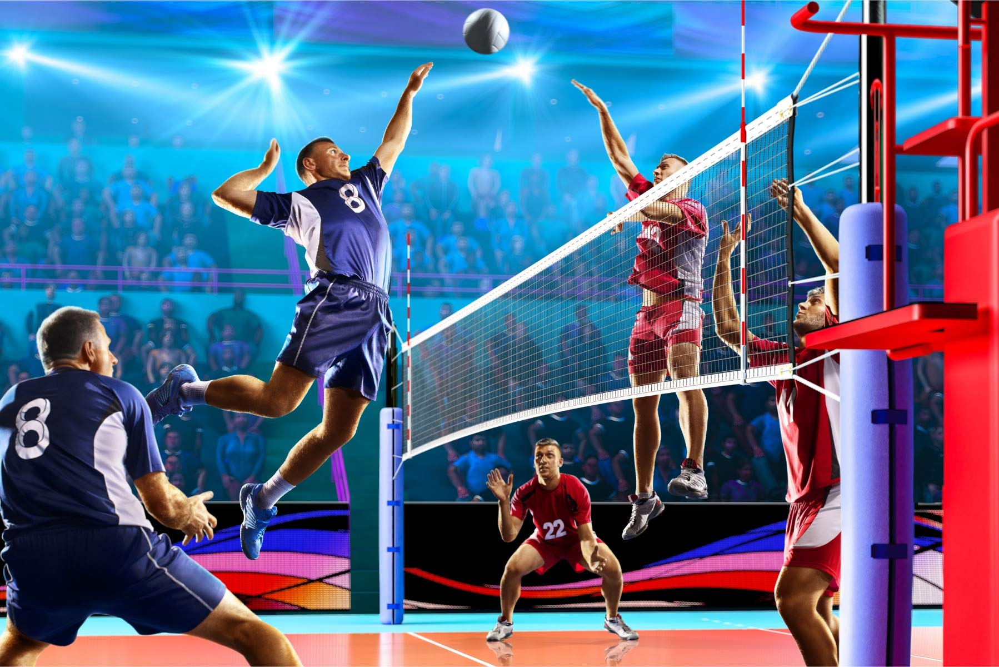
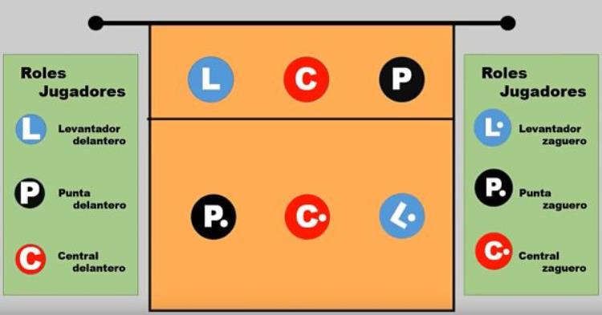
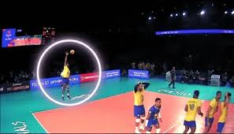
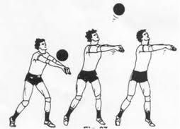
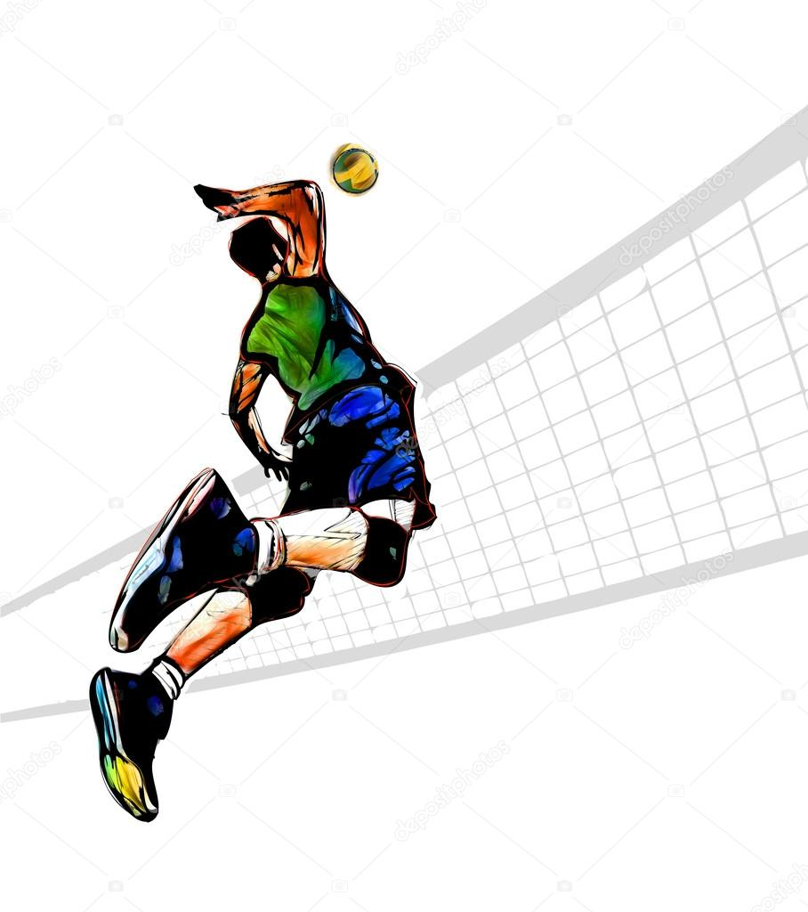

Volleyball Blog (por Elmer)
Resumen del Volleyball
En esta seccion se explica que es el volleyball con un pequeño resumen rapido y sencillo

El voleibol (o volley) es un deporte de equipo que se juega entre dos conjuntos de seis jugadores cada uno, separados por una red, en una cancha dividida en dos mitades. El objetivo principal es pasar el balón por encima de la red y hacer que toque el suelo del lado del equipo contrario, mientras se evita que el balón toque el suelo del propio lado.
Tipo de Jugadores
En esta seccion se explica los diferentes tipo de jugadores que existen dentro de la cancha de volleyball

Aqui se explica las distintas posiciones de algunos de los jugadores en la cancha
Levantador; es el que se encarga de colocar el balon
Punta; es el que se encarga rematar el balon
Central; es el que se encarga blockear el balon enemigo
Tipo de Jugadas
En esta seccion se explica los diferentes tipos de Jugadas que existen dentro de la cancha de volleyball



Saque; Un ataque solitario que abre el juego cada rotacion
Recibir; Accion para evitar que el balon toque el suelo
Rematar; Accion que se realiza en la malla para intentar hacer el punto golpeando el balon